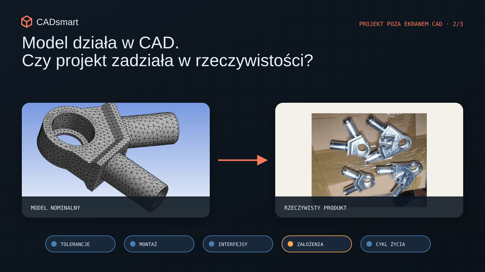
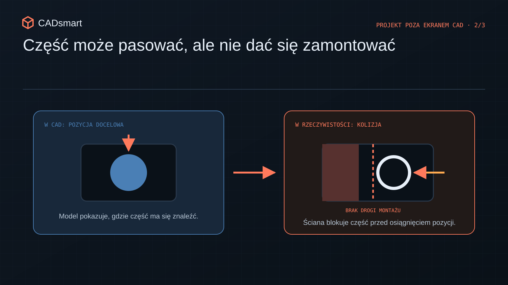
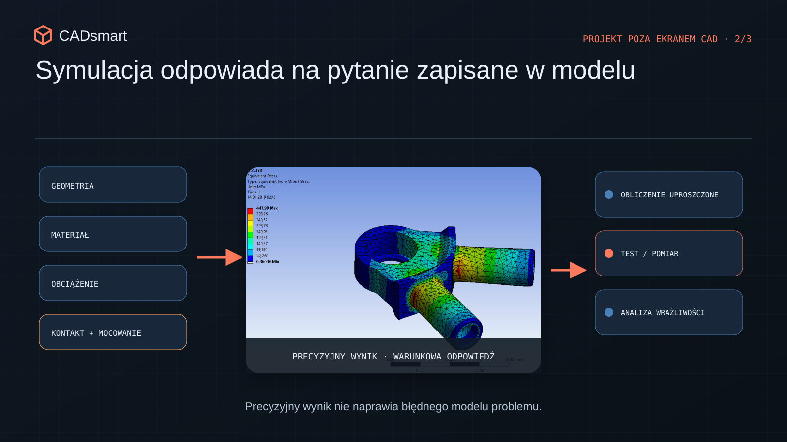
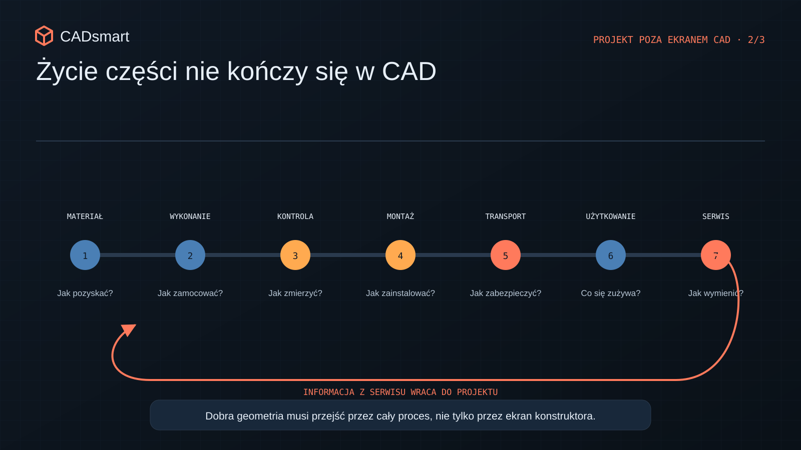

Model działa w CAD. Czy projekt zadziała w rzeczywistości?
Pięć obszarów, które warto sprawdzić przed prototypem: tolerancje, montaż, interfejsy, symulacje oraz cały cykl życia produktu.
Od poprawnej geometrii do działającego produktu
W CAD-zie świat działa podejrzanie idealnie. Każda część ma dokładnie taki wymiar, jaki jej nadaliśmy. Przewód pokornie układa się po wyznaczonej trasie, materiał nie ugina się, dopóki mu na to nie pozwolimy, a śrubę można umieścić nawet tam, gdzie podczas montażu nie zmieści się ani klucz, ani ręka, ani resztki cierpliwości montera. Na ekranie wszystko pasuje, bo model zna wyłącznie reguły, które sami mu podaliśmy. Rzeczywisty produkt dorzuca własne: tolerancje, sztywność, tarcie, kolejność montażu i człowieka, który ma to wszystko złożyć dwiema rękami. I właśnie w tym miejscu poprawny model CAD może przestać być poprawnym projektem.
Części mają odchyłki. Przewody własną sztywność. Operator tylko dwie ręce. Narzędzie zajmuje miejsce, a kolejność montażu potrafi zablokować rozwiązanie, które na ekranie wyglądało wręcz elegancko. Dlatego poprawny model 3D nie jest jeszcze dowodem, że projekt jest dobry. CAD świetnie opisuje geometrię, ale nie zna całego kontekstu. Nie wie, kto będzie to składał, jak część zostanie wykonana, co się ugnie, co rozgrzeje ani do której śruby serwisant zacznie kiedyś mówić bardzo nieładne rzeczy.

Poniższych pięć obszarów traktuję jak przegląd przed zamówieniem prototypu albo wypuszczeniem dokumentacji. I nie, nie są to wyłącznie „błędy początkujących”. Wracają również w doświadczonych zespołach, zwłaszcza gdy kilka technologii spotyka się w jednym produkcie, a termin zaczyna oddychać wszystkim na kark.
1. Nominał pasuje. Tylko że nominał prawie nie istnieje
W modelu otwór ma dokładnie 10 mm, rozstaw dokładnie 80 mm, a dwie powierzchnie spotykają się idealnie. W produkcji każdy z tych wymiarów porusza się w pewnym zakresie. Raz trochę w górę, raz trochę w dół. I pojedynczo wszystko może być zgodne z rysunkiem. Problem zaczyna się wtedy, gdy kilka takich wymiarów tworzy jeden łańcuch. Nagle wszystkie części są formalnie dobre, ale złożenie nie daje wymaganego luzu, docisku albo położenia. Każdy zrobił swoje poprawnie, a produkt mimo to nie działa. Inżynierska wersja „wszyscy niewinni, tylko trup leży”.
Analiza łańcucha tolerancji nie zawsze wymaga potężnego arkusza i modelu statystycznego. Najpierw trzeba po prostu zrozumieć funkcję:
- które powierzchnie rzeczywiście pozycjonują element;
- gdzie potrzebny jest luz, a gdzie kontrolowany docisk;
- jaki wymiar zamyka cały łańcuch;
- które odchyłki sumują się w najgorszym przypadku;
- czy bazowanie na rysunku odpowiada montażowi i kontroli.
Przy zespołach elektromechanicznych, elementach blaszanych, obudowach z tworzyw czy prowadzeniu kabli jedna zmiana wymiaru potrafi przejść przez kilka interfejsów naraz. Dlatego tolerancja nie jest przyprawą, którą posypujemy gotowy rysunek. Jest częścią architektury produktu.
Warto też uważać na tolerancje zawężane „dla bezpieczeństwa”. Bardziej dokładny wymiar nie naprawi niejasnego bazowania. Może za to podnieść cenę, ograniczyć liczbę dostawców i sprawić, że kontrola stanie się osobnym projektem. Dokładniej nie zawsze znaczy lepiej. Czasem znaczy tylko drożej.
2. CAD teleportuje części. Monter niestety nie może
W złożeniu klikamy i element pojawia się dokładnie tam, gdzie powinien. W rzeczywistości ktoś musi go chwycić, obrócić, wsunąć, przytrzymać, połączyć i jeszcze sprawdzić, czy zrobił to dobrze. Dlatego złożenie części to nie to samo co proces montażu. Najprostszy przegląd zaczyna się od przejścia przez prawdziwą kolejność operacji. Jeśli najpierw montujemy część A, czy nadal mamy dostęp do śruby B? Czy klucz wejdzie w osi połączenia? Czy operator widzi miejsce montażu? Czy przewód da się ułożyć bez łamania dopuszczalnego promienia i bez demontażu połowy urządzenia?

Same elementy złączne potrafią dostarczyć sporo rozrywki. Biblioteka CAD dobierze średnicę i długość śruby, ale nie powie nam automatycznie:
- czy zmieści się klucz albo wkrętak;
- czy jest miejsce na wprowadzenie śruby;
- czy nakrętka może wpaść do wnętrza urządzenia;
- czy podobne śruby da się łatwo pomylić;
- ile razy podczas montażu trzeba zmienić narzędzie;
- czy połączenie da się później rozebrać w serwisie.
Podczas nadzoru nad montażem prototypów i pracy z zespołami produkcyjnymi dobrze widać, że konstruktor i monter patrzą na ten sam detal zupełnie inaczej. Konstruktor widzi funkcję połączenia. Monter widzi ruch ręki, dostęp, kolejność i ryzyko pomyłki. Dobry projekt musi pogodzić oba światy.
Pomaga bardzo prosty test: przejść montaż krok po kroku z modelem, rzeczywistymi narzędziami i planowaną kolejnością. Najlepiej z osobą, która nie budowała tego złożenia w CAD. Ona nie zna naszych skrótów myślowych i właśnie dlatego szybko znajdzie miejsca, w których projekt działa tylko dzięki wiedzy konstruktora.
3. Świetna część może zepsuć cały produkt
Konstruktor zwykle odpowiada za konkretny komponent albo podzespół. To naturalne, ale łatwo wtedy wpaść w lokalną optymalizację. Część staje się lżejsza, sztywniejsza lub prostsza w produkcji, a przy okazji pogarsza chłodzenie, montaż, prowadzenie kabli albo dostęp serwisowy sąsiedniego układu. Na swoim ekranie wygraliśmy. Cały produkt przegrał.
W urządzeniach łączących blachy, odlewy, tworzywa, gotowe komponenty i okablowanie to właśnie interfejsy bywają ważniejsze od pojedynczych części. Na styku kumulują się odchyłki, obciążenia, wymagania montażowe i odpowiedzialność kilku osób. Czyli dokładnie tam, gdzie najłatwiej założyć, że „ktoś inny to sprawdzi”. Dlatego projekt warto przeglądać nie tylko część po części, lecz także według przepływów:
- jak przez produkt przechodzą siły;
- którędy płynie energia lub medium;
- jak prowadzone i odciążane są przewody;
- gdzie ucieka ciepło;
- jak użytkownik oddziałuje z urządzeniem;
- co trzeba otworzyć, wyjąć lub odłączyć podczas serwisu.
Pytanie „czy moja część jest poprawna?” warto więc zamienić na „co moja część robi całemu produktowi?”. To szczególnie ważne w pracy rozproszonej, gdy każdy właściciel podzespołu pilnuje własnego ogródka. Produkt niestety nie przejmuje się granicami między działami.
4. Symulacja potrafi policzyć wszystko, poza tym, że liczymy zły przypadek
Program szybko wykryje kolizję, policzy naprężenia albo wygeneruje wariant geometrii. Wynik ma trzy miejsca po przecinku i kolorową mapę, więc wygląda bardzo pewnie. Człowiek odruchowo zaczyna mu ufać. Tyle że każdy wynik odpowiada wyłącznie na model i założenia, które sami wprowadziliśmy. Analiza wytrzymałościowa nie zgłosi, że sposób zamocowania w symulacji nie odpowiada rzeczywistości. Detekcja kolizji nie znajdzie przewodu, którego nie dodaliśmy do złożenia. Nie pokaże też brakującego narzędzia, uszczelki ani zakresu ruchu, którego nie zasymulowaliśmy. Biblioteka komponentów nie zagwarantuje z kolei, że wybrana część będzie dostępna w odpowiednim wariancie i terminie.

Pracując z analizami konstrukcyjnymi, prototypami i testami, traktuję wynik cyfrowy jako jeden element dowodu, a nie pieczątkę zamykającą temat. Sensowna kolejność wygląda tak:
- zapisujemy założenia wejściowe;
- sprawdzamy, czy model odpowiada rzeczywistemu przypadkowi;
- oceniamy, jak wynik zmienia się wraz z założeniami;
- porównujemy go z prostym obliczeniem, doświadczeniem albo testem;
- zapisujemy, czego analiza nie obejmuje.
Nie chodzi o nieufność wobec narzędzi. Program robi dokładnie to, o co go prosimy. Problem w tym, że potrafi bardzo dokładnie odpowiedzieć na źle postawione pytanie. Za liczby odpowiada solver. Za sens całego przypadku nadal odpowiada konstruktor.
5. Projekt nie kończy się na przycisku „release”
Część może świetnie działać w prototypie, a potem sprawiać problemy przy produkcji, kontroli, transporcie albo serwisie. Bo życie produktu jest znacznie dłuższe niż chwila, w której wykonuje swoją główną funkcję.

W modelu podstawowym zwykle nie widać wielu bardzo przyziemnych pytań:
- jak część zostanie zamocowana podczas obróbki i kontroli;
- które wymiary naprawdę da się zmierzyć;
- jak produkt zostanie podniesiony, zabezpieczony i zapakowany;
- co zrobią z nim drgania, temperatura i wielokrotny montaż;
- które elementy będą się zużywać i jak je wymienimy;
- czy serwis potrzebuje specjalnego narzędzia lub kalibracji;
- jak odróżnimy od siebie kolejne rewizje.
W projekcie obiektu sportowego dla klienta w USA moja praca nie kończyła się na samej konstrukcji. Zakres obejmował również koszt, optymalizację, pakowanie i koordynację wykonania. I dobrze pokazuje to szerszą zasadę: rozwiązanie techniczne jest tylko częścią procesu dostarczenia i użytkowania produktu. Jeśli ten proces nie działa, piękna geometria niewiele pomoże.
Pięć minut przed wypuszczeniem dokumentacji
Przed zamówieniem prototypu albo kliknięciem „release” warto jeszcze raz:
- sprawdzić funkcję w skrajnych kombinacjach tolerancji;
- odtworzyć prawdziwą kolejność montażu z narzędziami;
- przejrzeć interfejsy i wpływ części na resztę produktu;
- zapisać założenia analiz oraz sposób ich potwierdzenia;
- przeprowadzić część przez produkcję, kontrolę, transport i serwis.
CAD jest świetnym narzędziem do opisywania rozwiązania. Ale nie zastąpi rozmowy z produkcją, montażem, testami ani użytkownikiem. Największa wartość konstruktora zaczyna się właśnie tam, gdzie kończy się automatyczna odpowiedź programu.
Jaki problem zdarzyło Wam się zauważyć dopiero przy prototypie albo montażu, mimo że na ekranie wszystko wyglądało idealnie? Chętnie porównam doświadczenia w komentarzach.
Sprawdź swój projekt
Chcesz sprawdzić, czy model opisuje produkt, który rzeczywiście da się wykonać, zmontować i użytkować?
Rozwiń 9 pytań kontrolnych
- Czy dla każdego krytycznego pasowania obliczono skrajny, nadal zgodny z dokumentacją łańcuch tolerancji oraz sprawdzono funkcję i możliwość montażu?
- Czy bazy na rysunku odtwarzają sposób ustalenia części podczas wykonania, montażu i kontroli, a każda zawężona tolerancja wynika z funkcji?
- Czy osoba nieznająca modelu zmontuje produkt w określonej kolejności, rzeczywistymi narzędziami, bez ukrytych regulacji i ryzyka pomylenia części?
- Czy po montażu pozostaje wymagany dostęp do kontroli, regulacji, diagnostyki i wymiany części serwisowych?
- Czy każdy krytyczny interfejs ma właściciela, wymagania po obu stronach oraz sprawdzone przepływy sił, ciepła, energii, medium i przewodów?
- Czy sprawdzono pełny zakres ruchu wraz z rzeczywistymi przewodami, uszczelnieniami, narzędziami i przestrzenią potrzebną operatorowi?
- Czy założenia, warunki brzegowe i wrażliwość każdej kluczowej symulacji są zapisane, a jej wynik ma niezależną metodę potwierdzenia?
- Czy część można jednoznacznie wykonać, zamocować, zmierzyć, oznaczyć i zapakować przy wykorzystaniu realnych możliwości dostawcy?
- Który element najprawdopodobniej zużyje się lub rozreguluje jako pierwszy i czy można go zdiagnozować oraz wymienić w założonym czasie?
Chcesz zachować pytania na później?